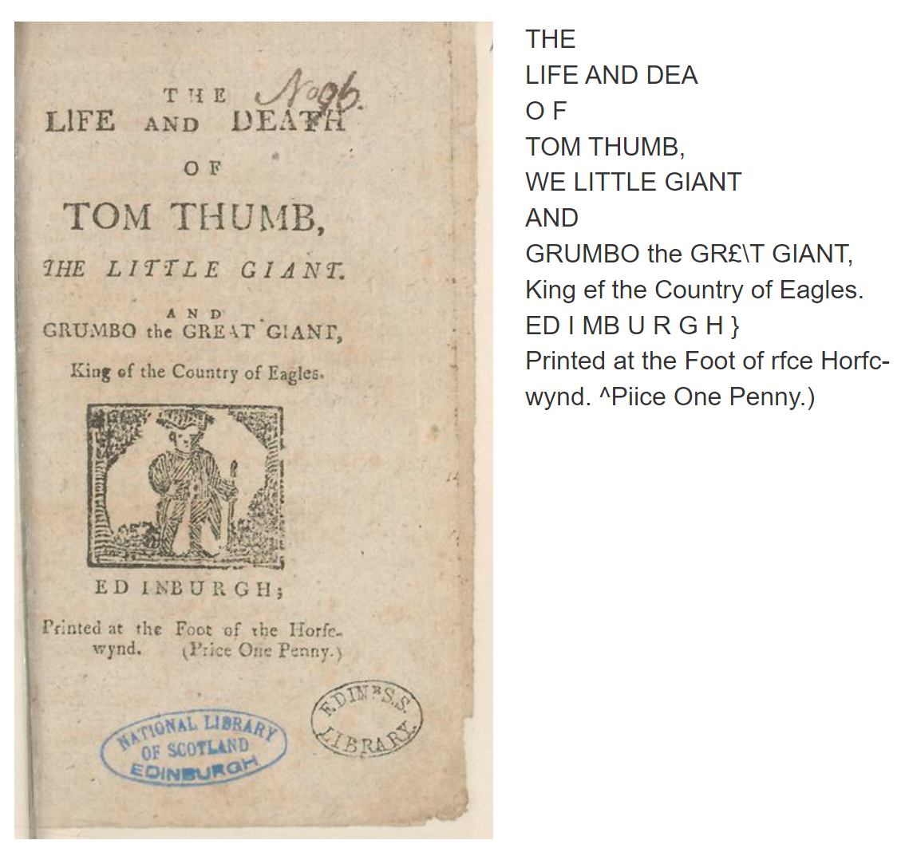
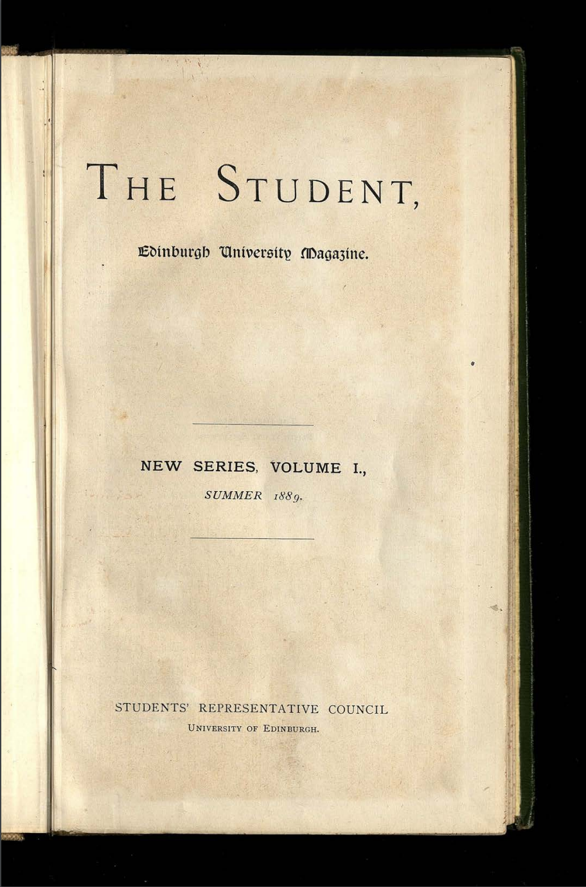

Text Extraction & Preparation
Text recognition from images is an important part of the digitisation process that creates a text output from digital images. Optical Character Recognition (OCR) is the most well-known method of text extraction. OCR uses technology to identify individual characters in digital images or scanned documents by recognising each character at a time. This process allows large volumes of documents to be scanned to create text transcriptions that would be time-consuming to do by hand, providing access to many textual documents. When you access digitised books online the searchable text has often been created using OCR.

This example shows the image of the original page alongside text created using OCR in the National Library of Scotland’s online image gallery.
If you need to extract text from images, follow Converting Images to Text Files with OCR, then move to Cleaning Up OCR to clean your data.
If you already have an OCR output move straight to Cleaning Up OCR.
Converting Images to Text Files with OCR
OCR can be run on printed or handwritten text, but the results vary depending on the type and quality of text. Handwritten text in block capitals is more likely to work with OCR than non-standardised text or difficult to read writing such as copperplate. Printed or typed text usually has much better results than handwritten. To use OCR you will need high-quality images to run the software on.
These images should meet the following criteria:
- Be brightly lit and in focus.
- Have a good contrast between the text and page, for example, black text on a white or light-coloured page.
- Any text in the image should be straight in the photograph and not skewed.
- High-resolution images on capture; this cannot be changed after the photo is taken.
- Stored in a format that keeps the image quality as high as possible, such as TIFF files. JPG files are smaller because they compress data and lose image quality.
- Kept in a usable format; OCR programs will accept certain file formats such as JPG, TIFF, PNG or in some cases PDF. It is best to check in advance to ensure you have a usable format for your specific software.
For example, this file of The Student, the University of Edinburgh’s student newspaper, is brightly lit and focused so that all the text is clear and straight-on in the photograph. There is also good contrast between the dark lettering and the lighter page, making it a perfect image to use with OCR software.
All these factors can impact the quality of the OCR produced and influence the accuracy of the text output. A conservation assessment of materials and guidelines for handling them should be made before images are scanned and digitised, either by organisations such as libraries and archives or by individuals in ownership or custody of materials. All imaging and handling should adhere to these guides and the condition of cultural heritage materials should not be compromised when imaging. For example, do not force a tightly bound book spine in order to get a clearer or straighter image; always prioritise the safe handling of materials.
Image processing software used by libraries and archives often have OCR built in, but it is available in commonly known software such as Adobe Acrobat and ABBYY FineReader and R via Tesseract. The University of Edinburgh provides access to this software and others through the uCreate space on the first floor Main Library in George Square. There are also open software programmes to run your own; see the Programming Historian: OCR and Machine Translation lesson to run your own OCR.

Cleaning up OCR
Although OCR software can create large volumes of text from images, the text will contain errors and inaccuracies.
Examples of common OCR errors include:
- The misrecognition of characters that appear similar, for example ‘cl’ and ‘d’, or ‘rn’ and ‘m’, which results in the incorrect substitution of a letter or letters. For example, ‘clean’ becomes recognised as ‘dean’.
- Marks on the page being picked up as letters or punctuation by the software, resulting in incorrect characters being inserted where they do not exist in the text.
- Omissions or deletions where letters or words were not recognised by the software.
- OCR software that recognises words may have difficulty with vocabulary not found in dictionaries, such as names of people or locations, or non-standard spellings in older historical texts.
Although not specifically an error, another challenge of OCR is the splitting of words across text lines which are usually hyphenated. If you are conducting text analysis it may be helpful to remove the hyphenation to show the full word, which can be done in the OCR clean-up process: see Programming Historian: Cleaning OCR’d text with Regular Expressions.
You can calculate your character error rate and word error rate to determine your text quality.
Anyone working with documents produced by OCR should be aware of these common errors and challenges when working with ‘dirty’ OCR. Certain errors can be cleaned up to make OCR’d text more usable, although it is still difficult to achieve a completely accurate text. Depending on the quantity of text you are working with, you may be able to also manually correct and clean up your text. If you have a large quantity of data additional manual corrections will not be feasible so you may need to accept a certain degree of inaccuracy in your extracted text.
ROpenSci has a guide on using the Tesseract and Magick programs to clean up images and run OCR for a higher quality output.
For more on dirty OCR see:
- Cordell, Ryan. ‘“Q i-Jtb the Raven”: Taking Dirty OCR Seriously’. Book History 20, no. 1 (2017): 188–225. https://doi.org/10.1353/bh.2017.0006.
Text Extraction with HTR
Handwritten Text Recognition (HTR) is another method for text extraction. Where OCR often focuses on individual characters, HTR software uses artificial intelligence (AI) to recognise characters and words within each line of text. This more advanced technique of text extraction can often produce more accurate results than OCR, potentially requiring less processing after text extraction.
OCR is more well-known and established so is more readily available for use, especially in open software options, than HTR. Transkribus is one platform designed for HTR use with historical documents for text recognition, transcription and a search function. It has a limited free version which can be used to generate around 500 pages of text and options to purchase further credits on the platform, so users would need to be aware of their financial scope for large quantities of text.
Although HTR can generate text with a higher accuracy rate, some level of text cleaning may be required before progressing with your data, such as the hyphenation correction outlined above.
Once you have extracted and cleaned your text you are ready to use it in your research.
Where to find more information

UoE Resources

Self-Guided Learning

- Programming Historian: OCR and Machine Translation
- Programming Historian: Cleaning OCR’d text with Regular Expressions
- Programming Historian: Generating an Ordered Data Set from an OCR Text File
- Programming Historian: Working with batches of PDF files
- Understanding Resolution (LinkedIn Learning)
- Recognising text in a scanned PDF (LinkedIn Learning)
- Tesseract Engine for R
- Advanced Image processing with Magick (R)